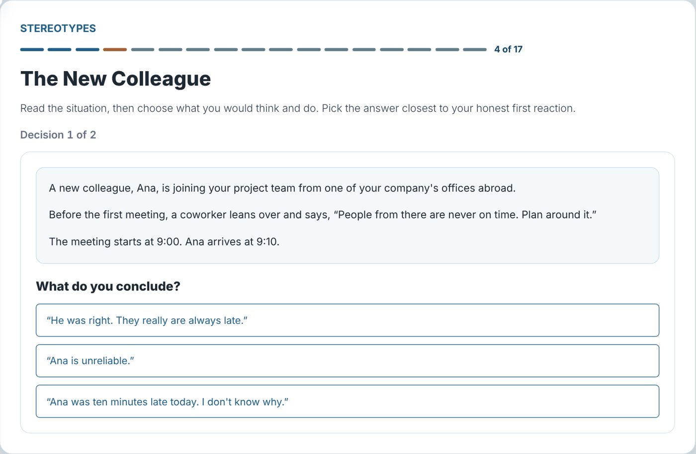
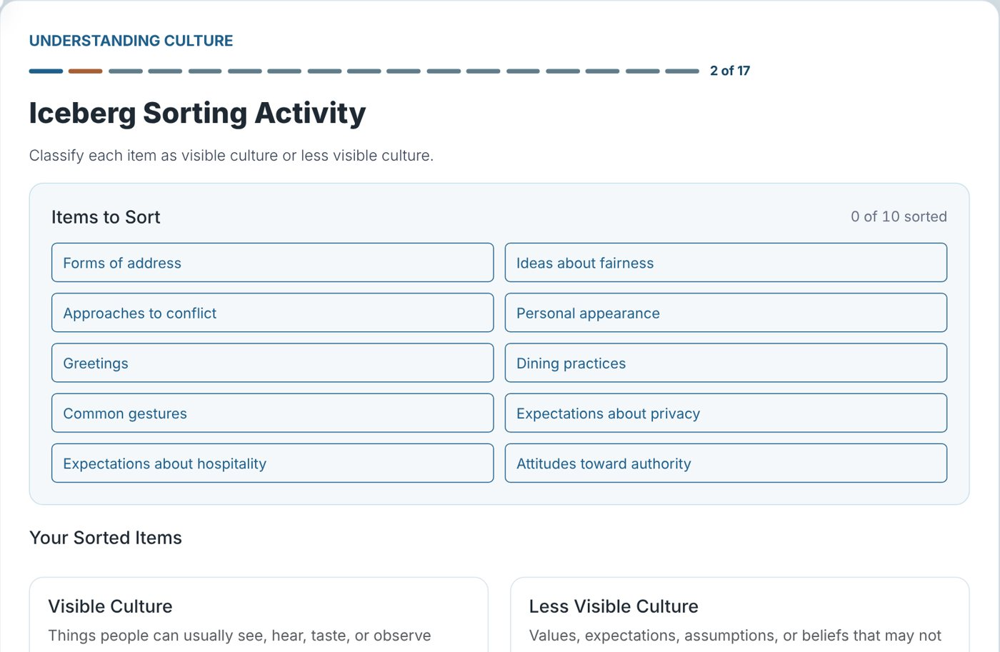

Intercultural Communication Workshop
Self-paced online course, 7 modules
I first taught this as an in-person, slide-based workshop for multicultural groups of international students. I redesigned it as a self-paced web course that teaches reusable habits instead of facts about particular cultures: noticing assumptions, tolerating ambiguity, and reflecting before judging.
- Uses scenario-based learning, critical incidents, and a structured reflection framework (DAEA).
- Includes interactive sorting, scenario-analysis, and guided-reflection activities, with saved learner responses and progress tracking.
- Built with HTML, CSS, and JavaScript through an AI-assisted workflow, applying accessibility principles.
- The design rationale is documented in a published case study.
Take the 10-minute showcase Open the full workshop Read the design case study View the source
